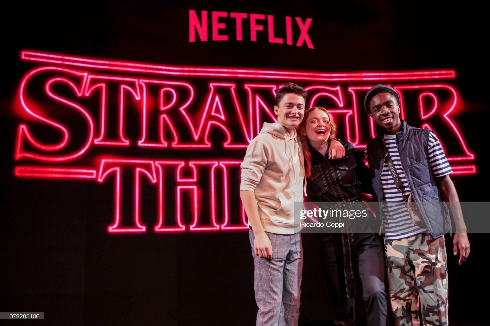
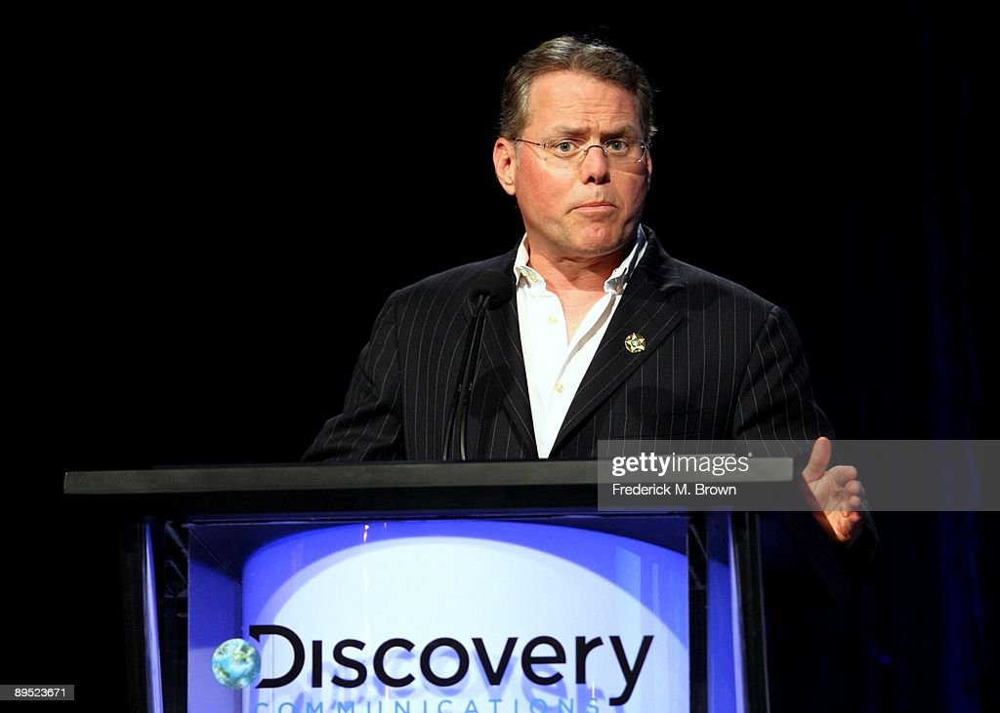

By ALEX CRANZ
Dec 14, 2022, 2:46 PM EST
The golden age of the streaming wars has ended It’s over. For the last half-decade, we’ve enjoyed a golden age in entertainment. The rise of the streaming service has brought more TV and film into our homes than ever before. It’s been a joy — and sometimes a chore — to keep up with every new offering Netflix, HBO Max, Disney Plus, and the rest put before us. But over the last few months, we’ve seen a reorientation of how many of these services do business, and it’s clear that this glut of content we’ve enjoyed, for the mere cost of a monthly subscription, is about to end. Some of us are going to keenly feel the pain of that more than others.
Before streaming changed the landscape of Hollywood, it was a very different place. It could take writers years to become showrunners, and the number of plum roles for a new star was few and far between. There was a lot of reality TV — particularly on cable — but scripted television was limited to just a handful of channels. The owners of those channels were in a brutal competition for your eyeballs, crafting prestige show after prestige show to arrest our attention. From 1999, with the premiere of The Sopranos, to somewhere in the mid-2010s, there was a Golden Age of TV.
Then the streaming wars came, and let’s be real: it was a blast. It was another golden age. Netflix started pouring money into Hollywood in an effort to build a cache of big hits so it could compete with the likes of Disney and Warner Brothers and MGM who owned most of the biggest franchises. But while Netflix has struggled to build big franchises outside of Stranger Things, Bridgerton, and The Witcher (the latter two are based on hugely popular book series), it was churning out a lot of content, effectively throwing everything at the wall to see what sticks. And it felt like everyone else followed suit. The rival streamers all clearly had their own content strategies based around stuff like Game of Thrones, Star Wars, and whatever cowboy stuff Taylor Sheridan wants to get up to, but they were also willing to experiment in a way that was uncommon before the streaming wars.
Stranger Things is one of Netflix's most popular television shows.
That experimentation was a particular boon for marginalized communities. Because when the distribution channels for TV and film were limited to a number of timeslots on cable and in the theaters, Hollywood was cautious — only putting money into films and TV that would appeal to the widest audience, which meant film and TV was very male-oriented, very white, and very, very straight.
The streaming wars opened up more avenues of distribution, which meant more action shows with women as the leads, comedies that didn’t need a white dude or a big-time comedian to anchor them, and dramas with a happy ending and a title character that was queer. We often like to measure diversity in entertainment by “firsts,” and in the last few years, we’ve racked up more firsts than in a dozen preceding years.
But these unprecedented times, where we had so much scripted content available that Hollywood faced a showrunner shortage, are coming to a close. While the streaming wars haven’t ended, there’s definitely a lull in the fight, and the streamers are all adjusting their tactics. They poured a lot of money into content in the hopes of securing subscribers, but now there’s increased competition, and it’s no longer feasible to just shovel cool shows into our mouths with little programming strategy beyond “seems neat.”
But these unprecedented times, where we had so much scripted content
available that Hollywood faced a showrunner shortage, are coming to a
close, says Cranz.
Last month, Netflix’s co-CEO Reed Hastings appeared at The New York Times’ annual DealBook Summit to talk about the platform and streaming in general. He was candid about the need for Netflix to make money and made it clear that he’d take the successes where he would get them regardless of the cultural costs, which means he’ll happily commission Dave Chappelle specials “again and again” even if they’re so transphobic they inspire protests, but smaller, more emphatically queer shows like Warrior Nun and The Babysitter’s Club get canceled — despite seeming to do well based on the few metrics Netflix makes public.
HBO Max is a more clear-cut, if devastating, example of the shifting strategies of the streaming wars. Warner Bros. Discovery CEO David Zaslav has been extraordinarily clear that he’ll sacrifice plenty of shows and movies if it means he can save a buck. The practically finished Batgirl was shelved for tax savings (unshelving it would now be costly for the same reason), and over the summer and fall, dozens more films and TV shows were unceremoniously yanked from the service to allegedly avoid paying residuals to the people who worked on them.
This week, more shows got a similar “anything to save a buck” ax. Westworld, which was canceled after four seasons, was pulled from HBO Max alongside The Nevers — the Joss Whedon-helmed show that started terribly and turned fascinating before it went on hiatus in 2021. The second half of its first season is supposedly complete, but neither half will be airing on HBO Max. Nor will the second season of Minx, a surprisingly fun period show about making a dirty magazine for women. The show has already been renewed by HBO Max, and Variety claims the service may be shopping it around to other distributors.
TV shows suddenly being canceled with entire episodes shelved was relatively common pre-streaming. There were limited slots to air stuff on TV, and TV channels would rather air an old rerun than the final episode of a little-watched show if it meant it could sell pricier ads against that rerun.
In the streaming world, there’s infinite shelf space, which theoretically means it doesn’t matter how many people watch a thing already commissioned and produced as long as someone watches it. This is why a pre-Zaslav HBO Max had no problem showcasing abruptly ended shows like Swamp Thing and that Flash series from the ’90s.
Warner Bros. Discovery CEO David Zaslav
But you still have to pay creators residuals, and Zaslav is going to avoid doing that if he thinks the audience on a specific show is too small compared to the money he has to pay to keep that content on his service. And the price of keeping those shows in perpetuity on a streaming service is probably going to get more expensive soon, too. In 2023, the Writers Guild of America, the Directors Guild of America, and the Screen Actors Guild will all negotiate new contracts with the Alliance of Motion Picture and Television Producers, and streaming residuals are going to be a major point of discussion.
And to keep up with the rising costs of creating and maintaining content on these services (and, to be clear, I am all for paying creators appropriately for their content), streamers won’t just be looking to secure your subscriptions — they’re gonna want to sell your viewership against ads, which now every major streamer offers.
That means the next phase of this streaming war won’t be about securing your long-term subscription with really cool shows that cater to smaller audiences. It will be about reaching as wide an audience as possible to secure eyeballs for ads. And that means this renaissance that’s appealed to smaller segments of the population is going to come to an end, and what’s left is just going to get more expensive.